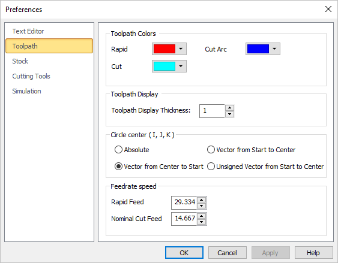
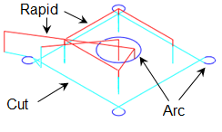

Here you can set Toolpath related preferences including colors, display, format and feedrate.
|
 Preferences > Toolpath |
You can specify the default colors to graphically display Rapid, Linear and Arc moves. Use the color selector available for each.  Toolpath Display Color Preferences |
Here you can set the line thickness for the display of all toolpaths.
|
I,J,K refers to the center point location for arc motions. In this section you can define how arc motions are formatted in the output G-Code file. Select from the following options: •Absolute •Vector from Center to Start •Vector from Start to Center •Unsigned Vector from Start to Center |
Here you can specify feedrate values for the G-Code file. Select from the following: •Rapid Feed •Nominal Cut Feed |